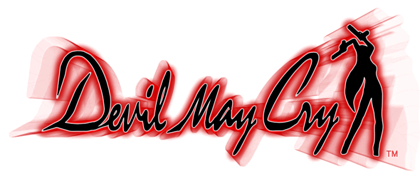
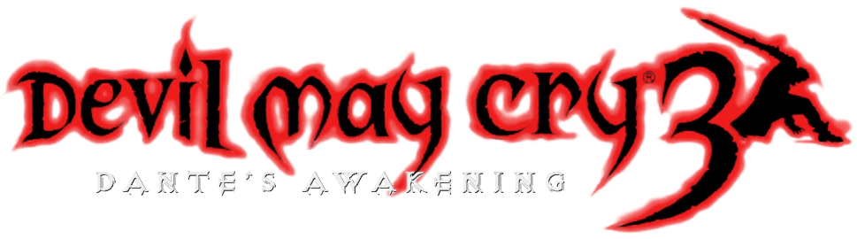
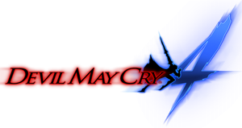

Devil May Cry: estilo, demônios e ação frenética
Devil May Cry é a franquia que reinventou o gênero hack-and-slash. Com combate rápido, combos estilizados e o carismático Dante, a série mistura demônios, humor e drama, conquistando fãs desde o primeiro lançamento em 2001.
🎮 Jogos da Série Devil May Cry
- 

- 
- 

📅 Ordem Cronológica Canônica
🧬 Sinopse da História
Dante, filho do demônio Sparda, combate criaturas infernais lançadas por demônios e humanos ambiciosos. Misturando archidemônios, colaborações familiares e alianças improváveis, a saga é um espetáculo de ação e redenção.